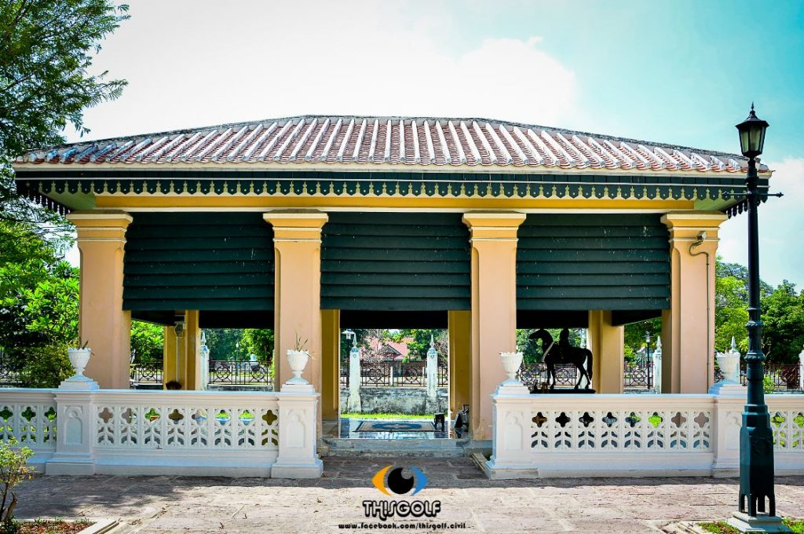

ประวัติของวัดนิเวศน์ธรรมประวัติ
วัดนิเวศธรรมประวัติ ตั้งอยู่บนเกาะกลางแม่น้ำเจ้าพระยา ด้านทิศใต้ คนละฝั่งกับพระราชวังบางปะอิน พระบาทสมเด็จพระจุลจอมเกล้าเจ้าอยู่หัว โปรดให้สร้างเลียนแบบโบสถ์ฝรั่ง เมื่อ พ.ศ. 2421 อาคารและการตกแต่งทำแบบโกธิค มีกระจกสีประดับอย่างสวยงาม ภายในเป็นแบบฝรั่ง แม้แต่ฐานที่ประดิษฐานพระประทาน คือ พระพุทธนฤมลธรรโมภาส และพระสาวกก็ไม่ได้ทำเป็นฐานชุกชีอย่างในโบสถ์ทั่วไป แต่ทำเหมือนที่ตั้งไม้กางเขนในโบสถ์คริสต์ ช่องหน้าต่างที่เจาะไว้ก็เป็นหน้าต่างโค้ง ที่ฝาผนังโบสถ์ด้านหน้าพระประธานจะเป็นภาพประดิษฐ์กระจกสี เป็นพระ บรมฉายาลักษณ์ของรัชกาลที่ 5 ด้านขวามือของพระอุโบสถนั้น มีหอแห่งหนึ่ง คือ หอประดิษฐานพระคันธารราษฎร์ ซึ่งเป็นพระพุทธรูปยืนปางขอฝน ตรงข้ามกับหอพระคันธาร ราษฎร์ เป็นหอประดิษฐานพระพุทธศิลาเก่าแก่ปางนาคปรก อันเป็นพระพุทธรูปสมัยลพบุรี ฝีมือช่างขอมอายุเก่าแก่นับพันปีพระนาคปรกนี้อยู่ติดกับ ต้นพระศรีมหาโพธิ์ใหญ่ ที่แผ่กิ่งไปทั่วบริเวณหน้าพระอุโบสถ ถัดไปอีกไม่ไกลนักเป็นหมู่ศิลาชนิดต่างๆ ที่มีในประเทศไทย เป็นที่บรรจุอัฐิเจ้าจอมมาร ดาชุ่ม พระสนมเอกในรัชกาลที่ 4 เจ้าจอมมารดาของสมเด็จกรมพระยาดำรงราชานุภาพ และราชสกุลดิศกุลเมื่อเข้าชมพระราชวังบางปะอินแล้ว สามารถข้ามไปชมวัดนิเวศธรรมประวัติได้ โดยกระเช้าสำหรับส่งผู้โดยสารประมาณครั้งละ 6-8 คน ค่าโดยสารแล้วแต่บริจาค
จุดที่น่าสนใจของวัด
| พระอุโบสถวัดนิเวศธรรมประวัติ |
|---|
| พระพุทธนฤมลธรรโมภาศ |
| เทวรูปปัญจสิงขรและเทวรูปพระอินทร์ |
| พระตำหนักสมเด็จฯกรมพระยาดำรงราชานุภาพ  |
สุสานสวนหินดิศกุลอนุสรณ์ |
| พระขอฝน |
| นั่งกระเช้าข้ามแม่น้ำไปหาวัด |
รับชมวิดีโอที่ไปเที่ยวได้กันเลย
ภาพภายในวัด
การเดินทาง
- โดยรถยนต์ส่วนตัว / มาตามเส้นทางเดียวกับที่มาประพราชวังบางปะอิน จากกรุงเทพหากมาทางเส้นพหลโยธิน เมื่อถึงแยกตัดกับถนนกาญจนาภิเษก จะมีป้ายบอกทางไป อยุธยา – บางปะอิน เข้ามาตามถนนเส้น 308 ตรงมาจนเกือบสุดจะมีแยกขวาไปทางพระราชวังบางปะอิน ตรงมาจอดรถที่บริวเณเดียวกับที่จอดรถพระราชวังบางปะอิน ตรงข้ามกับโรงเรียนบางปะอิน “ราชานุเคราะห์ 1″ เมื่อจอดรถแล้วให้ขึ้นกระเช้าตรงแม่น้ำข้ามมายังวัดนิเวศธรรมประวัติ
แผนที่การเดินทาง
แผนที่จากบ้านของฉันไปวัดวัดนิเวศธรรมประวัติ